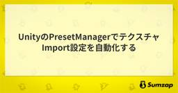

Sumzap Engineering Blog
https://tech.sumzap.co.jp/
サムザップのエンジニアブログです。Unity, PHP, AWS/GCPなどの技術情報や会社のエンジニア文化などを日々発信していきます。
フィード

UnityのPresetManagerでテクスチャImport設定を自動化する
Sumzap Engineering Blog
目次 UnityのPresetManagerでテクスチャImport設定を自動化する はじめに 内容 Presetを作成する PresetManagerに登録する Import設定自動化のメリット 設定漏れを防ぎやすい Compressionの設定を揃えやすい 用途ごとのルールをPresetとして残せる レビューで見る項目を減らせる Reimport時にもPresetを適用する 注意点 最後に 参考 UnityのPresetManagerでテクスチャImport設定を自動化する はじめに サムザップでクライアントエンジニアをしている尾崎です。 UnityのテクスチャImport設定を、Unit…
1日前

UIプレハブを一元管理・自動生成するUnityエディタ拡張の設計と実装
Sumzap Engineering Blog
目次 はじめに なぜ作ったのか 全体像 グループとアイテムのデータモデル エディタウィンドウの実装 ReorderableList による並び替え 重複登録を防ぐ プレビューの実装 再生ボタンでアニメーションを確認する Project Settings への統合 テンプレートからのコード自動生成 メニュー項目の生成 メソッド名の衝突回避 テンプレート置換と出力 生成されるコード 生成されたメニューから UI を生成する おわりに はじめに サムザップの Unity 向けアプリケーション基盤『Spica』では、開発を効率化するためのエディタ拡張をいくつも整備しています。今回はそのひとつ、Spic…
8日前
APV Lighting Scenarioで朝夜サイクルを実装する
Sumzap Engineering Blog
目次 はじめに 検証環境 シナリオ設計 今回のシナリオ構成 役割分担 ベイクワークフロー ステップ1：APV / Lighting Scenario を有効化 ステップ2：シーンにAPVを配置 ステップ3：ライトとMesh Rendererの設定 ステップ4：シナリオを追加 ステップ5：各シナリオにベイク ステップ6：2つ目以降はプローブ位置を固定してベイク 実装 データ構造：1 つのシナリオを 1 構造体にまとめる シナリオ選択：隣接 2 シナリオを 24h ループで選ぶ メイン処理：5 系統を Apply で同時補間 コンポーネントの使い方 Lighting Scenarios で設定した…
15日前
『呪術廻戦 ファントムパレード』におけるUnityメモリ最適化の取り組み - 低メモリ環境での安定動作を大幅改善
Sumzap Engineering Blog
こんにちは、Sumzapクライアントエンジニアの白濱です。 本記事では、スマートフォン向けゲーム『呪術廻戦 ファントムパレード』において、メモリ逼迫によるクラッシュ問題に対して実施した一連の最適化施策について紹介します。2か月間の集中的な取り組みにより、メモリ容量が限られた端末でも安定動作する環境を実現できましたので、その過程で得られた知見を共有します。 背景：メモリ逼迫によるクラッシュ問題 問題が顕在化したシーン ユーザーへの影響範囲 メモリ対応チームの結成と対応方針 チーム体制 対応方針 実施した対応内容 1. ADVとバトルの同時メモリ確保の回避 問題点 対応内容 2. メモリリークの徹…
21日前
UI Toolkit のバッチングを Frame Debugger で読み解く
Sumzap Engineering Blog
目次 はじめに 検証環境 UI Toolkit の特徴 UI Toolkit のバッチング基本検証 同一マテリアル × 10 の描画 異なる Material を使った場合 UI キャプチャ + PostEffect が入った場合 まとめ: Filter あり / なし の比較 バッチ分割条件の追加検証 異なるテクスチャ 9 枚での検証 (Atlas OFF) Atlas ON で再検証 Text と Image のバッチング挙動 まとめ 関連リンク はじめに 最新の Unity 6 系で UI Toolkit に UI Shader Graph と Custom Filter が追加され、U…
1ヶ月前
Terragrunt × GitHub Actions で開発環境をワンクリック追加・自動削除する仕組み
Sumzap Engineering Blog
目次 はじめに 開発環境を「動的に」追加・削除する意義 仕組みの全体像 suffix が環境を識別するキーになる suffix がリソース名・URL・state を分離する コスト設計：共有するもの・使い捨てるもの Google OAuth の callback を proxy して手動登録を排除する 何が問題だったのか callback host 方式による解決 セキュリティ上の考慮 reaper による期限切れ環境の自動クリーン TTL と自動延命 毎日の巡回と Slack 予告 恒常環境を守るガード おわりに はじめに サムザップでは、Google Cloud 上の開発環境を GitHu…
1ヶ月前
UI Toolkit の Filter 内部実装を Frame Debugger と UnityCsReference で読み解く
Sumzap Engineering Blog
目次 はじめに 検証環境 ビルトイン Filter の種類 Filter 有無での Frame Debugger 比較 URP パイプライン上のタイミング Blur Filter の PostEffect 処理を Frame Debugger で追う UIR.DrawChain / UIR.DrawRanges による VisualElement 描画 ピンク枠が示す描画余白 <unknown scope> の中で起きていること（Blur Filter を題材に） Clear 処理 1 回目の DrawGL: 対象描画ツリーの焼き込み 2 回目の DrawGL: 横方向 Gaussian Bl…
2ヶ月前
UI Toolkitで自作するUnityランタイムデバッグツールの設計と実装
Sumzap Engineering Blog
目次 はじめに なぜ自作したのか UI Toolkit を採用した理由 ゲーム本体の UI と独立して動かせる USS によるスタイル管理 ListView の仮想化 Editor / Runtime 両対応 PanelSettings の分離 ScriptableObject ベースの設定アーキテクチャ Setup Wizard で初期構築を自動化 DebuggerSettings に集約された設定 エントリポイントは1行 拡張ポイント: Trigger 抽象クラス: TriggerBase 同梱の Trigger 実装 Floating Button Keyboard Corner Lon…
2ヶ月前
Unity 6 の UI Toolkit でリッチな UI エフェクトを実装する
Sumzap Engineering Blog
目次 はじめに 検証環境 UI Toolkit における UIEffect の選択肢 ShaderGraph 経路 ShaderGraph実装 Tone: Grayscale (彩度を 0 にして白黒化) Tone: Sepia (Sepia 行列で茶色調) Tone: Negative (1 - color で反転) ColorMode: Multiply (TintColor を乗算合成) ColorMode: Add (AdditiveColor を加算合成) 装飾: Shiny (光のラインが走る) 装飾: Gradient (UV ベースのグラデーション) 統合 ShaderGrap…
2ヶ月前
ScrollRectを使わないUnityリサイクルスクロールの設計と実装
Sumzap Engineering Blog
目次 はじめに ScrollRect を使わない理由 標準コンポーネントの課題 ReusableScroller のアプローチ 全体のアーキテクチャ ScrollView ― 制御の中心 ScrollCellData ― セルのデータ ScrollCell ― セルのビュー 初期化処理 セルリサイクルの仕組み 2つのリストによる管理 スライディングウィンドウ方式の差分更新 事前計算レイアウトと二分探索 事前計算 二分探索によるインデックス検索 スクロール物理の自前実装 入力インタフェースの実装 LateUpdate による物理挙動 座標系の吸収 ループスクロールの実装 データの複製戦略 ジャン…
3ヶ月前
モバイルゲームのローカルキャッシュが壊れた！アトミック書き込みと3層防御で解決した話
Sumzap Engineering Blog
目次 はじめに なぜマスタデータは壊れるのか 書き込み途中のクラッシュ スレッド競合 データとハッシュの不整合 設計方針：3層防御 第1層：破損防止 アトミック書き込み スレッドセーフ化 起動時クリーンアップ 第2層：検知 整合性状態の定義 VerifyAndRead：検証と読み込みの一体化 第3層：リカバリ Load 失敗時の再ダウンロード誘導 破損ファイルの安全な削除 保存リトライ 落とし穴と学び File.Replace の代わりに Delete + Move を選んだ理由 FileStream の二重 Dispose ConcurrentDictionary.AddOrUpdate の…
3ヶ月前
Unityでの開発を支えるアプリケーション基盤
Sumzap Engineering Blog
はじめに Unityでゲームを開発していると、プロジェクトが変わっても繰り返し必要になる機能があります。デバッグツール、多言語対応、セーブデータの管理、大量データを表示するスクロールリスト――どれも一から作ると相応の工数がかかりますし、プロジェクトごとに品質がバラつくリスクもあります。 そこでサムザップでは、こうした共通基盤を UPM パッケージ として整備し、プロジェクト横断で再利用できる仕組みを構築しました。 この記事では、その基盤パッケージ群「Spica」の全体像と、各パッケージの機能・設計方針について紹介します。 Spica とは 名前の由来 Spica という名前は、Sumzap と…
4ヶ月前
『真 戦国炎舞 データベース』小規模兼任チームにおける開発PMの進行設計
Sumzap Engineering Blog
目次 はじめに サービス紹介 プロジェクト概要 開発PMというお仕事について 炎舞DBにおける開発PMの役割 プロジェクトの制約 クリティカルパスの設計 クリティカルパス 完了定義による進行管理 QAスコープの再設計 表示確認：QA対象 検索結果の妥当性確認：重点QA対象 データ整合性・リリース境界の担保：運用／実装で担保 ブラッシュアップ項目：内部検証＋リリース後対応 兼任チームでの進行管理 確認会の設計 発生した問題と改善 確認会を経て顕在化した差分による手戻り 意識していたこと 依存関係ベースで進行を組み立てること 役割ごとの完了条件を明確にすること 利用体験に関わる確認を早めに入れるこ…
4ヶ月前
CrashlyticsのログをAI解析して Slackに週次レポートを送信する
Sumzap Engineering Blog
目次 はじめに 仕組みについて 設計について 実装について Cloud Functions実装 ログ抽出 AI解析 Slack通知 デプロイとスケジューリング GitHub Actionsワークフロー まとめ はじめに サムザップ開発推進室ソリューションチーム所属の江畑と申します。 開発推進室は社内横断で開発効率向上を推進する部署であり、私の所属するソリューションチームは端的に言えば各プロジェクトの痒いところに手が届くようにサポートする取り組みをしています。 今回はソリューションチームにおける事例として、CrashlyticsのログをAI解析してSlackに週次レポートを送信する仕組みを作った…
5ヶ月前
コンテンツ開発力を技術でブーストする - 横断技術組織「開発推進室」
Sumzap Engineering Blog
目次 はじめに 開発推進室が生まれた背景 多くのプロジェクトで必要になる共通技術 プロジェクト分断による問題 開発推進室の目的 小さく始めた横断技術組織 開発効率化室 TA室 開発推進室の現在 4つの技術領域 ソリューション アプリケーション基盤 サーバー基盤 グラフィックス 技術的な取り組み 開発推進室が目指す未来 はじめに ゲーム開発では、多くのプロジェクトで共通して必要になる技術領域が存在します。 しかし、プロジェクト単位で開発が進む場合、これらの技術が各プロジェクトで個別に開発されてしまい、いわゆる「車輪の再発明」が起こりがちです。 その結果、技術投資が分散してしまったり、ノウハウが組…
5ヶ月前
『Sumzap Engineering Value』を体現したエンジニア組織の実現に向けて
Sumzap Engineering Blog
この度、エンジニアの行動規範である「Sumzap Engineering Value」をリニューアルしました。 この記事ではリニューアルした内容と、Valueを体現した組織の実現のために取り組んでいることを紹介させていただきます。
8ヶ月前
アドベントカレンダー（2025） 完走しました
Sumzap Engineering Blog
2025/12/1〜12/25の期間において、アドベントカレンダーとして技術記事25本を公開しました。
8ヶ月前
Unity テクスチャのメモリ使用量をプラットフォーム別に正確に求める
Sumzap Engineering Blog
本記事は、「サムザップ Advent Calendar 2025」 の12/6の記事です。 はじめに 複数プラットフォームを対象にしたUnityプロジェクトでは、テクスチャが実機でどれだけメモリを消費するかを把握することが欠かせません。Inspectorを見ればメモリ使用量はわかるものの、プラットフォームごとのメモリ使用量はSwitchPlatformが必要になって調査に時間がかかってしまいます。 また、「Prefabやシーンが含む全てのテクスチャのメモリ使用量を試算したい」といったことはよくあると思いますが、これには依存するテクスチャのプラットフォームごとのメモリ使用量を算出できる必要があり…
9ヶ月前
マスタデータ同期と運用効率化を実現する『真 戦国炎舞データベース』のバックエンド設計
Sumzap Engineering Blog
はじめに サービス紹介 サービス要件と前提 機能要件 非機能要件 前提 / 制約 全体アーキテクチャ 要件へのアプローチ コストを抑えるための SQLite 採用 ゲーム側のマスタデータと同期させる仕組み ① SQLite データベースファイルの生成と配布 ② SQLite データベースファイルの参照（ECS タスクでの読み込み） おわりに はじめに こんにちは、株式会社サムザップで SRE を担当している友利です。 先日、『真 戦国炎舞データベース』をリリースしました。 『真 戦国炎舞データベース』登場！📝📢カードやスキル・奥義の情報を検索できるデータベースサイトが登場しました！🎉✨もちろん…
1年前
『呪術廻戦 ファントムパレード』渋谷事変マップのアウトゲーム開発 ~新規表現と保守性の両立~
Sumzap Engineering Blog
目次 渋谷事変マップとは 渋谷事変マップ作成までのハードル 通常メインクエストマップと渋谷事変マップの両立 渋谷事変用のデータ構成 クエストクリア後演出、マップ変形演出について おわりに 渋谷事変マップとは 弊社で開発・運用中のタイトル『呪術廻戦 ファントムパレード（以下、ファンパレ）』に、渋谷事変マップという新しい見た目のメインクエストを2025年3月に追加しました。渋谷事変で起きている様々な出来事に対してゲームならではの表現を実現する改修となっており、既存のメインクエストに新しい要素が複数追加されています。 この渋谷事変マップは大きな開発でありながらサーバー側の開発が全く無く、根幹のデータ…
1年前
『呪術廻戦 ファントムパレード』「バトルリザルト」の大規模リファクタ ~工数10営削減までの裏側~
Sumzap Engineering Blog
目次 はじめに バトルリザルトが抱えていた課題について リファクタリングの実施方針 リファクタ時の注意した項目について バトルリザルトのリファクタフロー 1.バトルリザルト演出のフローを洗い出す 2. 課題を洗い出して、リファクタリングのゴールを決める 3. QAチームとの期間と対応想定内容のすり合わせ 4. プログラミング設計を考える 5. 基盤の実装を進め、バトルリザルトへ反映させる 開発へ与えた影響について おわりに はじめに サイバーエージェントに2024年新卒入社した水田です。現在はサムザップへ配属され、『呪術廻戦 ファントムパレード（以下、ファンパレ）』のアウトゲーム開発チームにて…
1年前
サービスロケータを用いたUnityでの活用事例
Sumzap Engineering Blog
はじめに サービスロケータ サービスロケータとは サービスロケータを紹介する上での背景 サービスロケータの役割 サービスロケータの実装例 サービスロケータのメリットとデメリット メリット デメリット 活用事例 通信APIのレスポンス差し替え データを差し替えずにそのままサーバーのデータを受け取って処理をする例 サービスロケータを用いて差し替える例 その他のデータの差し替え事例 最後に はじめに 本記事では、プログラムを特定の実装に依存せずに動作させる実装手法の1つである、サービスロケータ（Service Locator）についての説明とサムザップのUnityプロジェクトでの活用事例と紹介します…
2年前
『呪術廻戦 ファントムパレード』新機能 「クリア編成」を新卒サーバーサイドエンジニアが制作するまで
Sumzap Engineering Blog
新卒サーバーサイドエンジニアがファンパレの新しい機能を実装するまでの流れと学びについて紹介しております。
2年前
『この素晴らしい世界に祝福を！ファンタスティックデイズ』開発チームの新卒エンジニア1年目の振り返り
Sumzap Engineering Blog
『この素晴らしい世界に祝福を！ファンタスティックデイズ』開発チームに所属している新卒２年目のエンジニアが１年目を振り返りつつ、ゲーム制作の仕事うやサムザップの文化、雰囲気をお伝えします。
2年前
『呪術廻戦 ファントムパレード』運営開発チーム内での業務効率化を目的とした1DAYハッカソン実施事例
Sumzap Engineering Blog
『呪術廻戦 ファントムパレード』運営開発チーム内で行われた、業務効率化を目的とした1DAYハッカソン実施事例の紹介です。エンジニア自らが1から機能を考え、実装するという形式で開催し、そのためにどういった準備を行なったか、どんなものが出来たのかをお話いたします。
2年前
ファンパレ「夢幻廻楼」技術の裏側 ~ UI表現編~
Sumzap Engineering Blog
サムザップの『呪術廻戦 ファントムパレード（以下、ファンパレ）』開発チームに所属している二宮です。リリースしてから半年が経ち、新コンテンツ「夢幻廻楼」をリリースしました。このコンテンツでは、3Dを使用してライティングを施したリッチなグラフィックを提供しています。この記事ではUI表現の工夫点として、階層オブジェクトがどうできているかについてお話ししようと思います。
2年前
『呪術廻戦 ファントムパレード』メモリークエストの解放演出におけるグラフィック表現
Sumzap Engineering Blog
本記事では『呪術廻戦 ファントムパレード』のメモリークエストにおけるピース獲得時演出などで使用されている技術的な部分を一部紹介します。
2年前
ファンパレ「夢幻廻楼」技術の裏側 ~ 天候変化編~
Sumzap Engineering Blog
はじめに 無限に登れる塔 x 天候変化 を実現する仕組み 小さい塔を積み上げて無限に登れる塔を作る 天候変化の仕組み 塔の背景を歪ませる表現 NovaShaderのDistortionの仕組みとファンパレにおける課題 解決策：手前背景の周辺画素の歪みを弱くする おわりに はじめに サムザップの『呪術廻戦 ファントムパレード（以下、ファンパレ）』開発チームに所属している二宮です。リリースしてから半年が経ち、新コンテンツ「夢幻廻楼」をリリースしました。このコンテンツでは、3Dを使用してライティングを施したリッチなグラフィックを提供しています。また、各階層にいる敵を倒して登っていくと天候が変わるギミ…
2年前